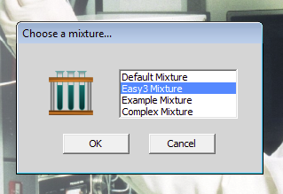
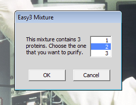
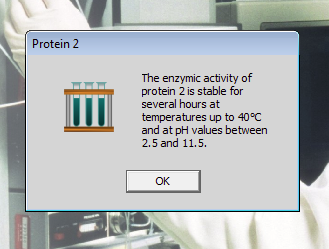
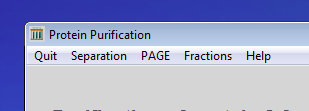

Si vous souhaitez traduire ces exercices, s'il vous plaît email apps@agbooth.com
 next exercise
next exercise
Exercise 1 of 6
Loading a simple mixture of proteins

Wait for the program to load. Most of the menus are not yet available.
Only the Help
and Start menus have any selectable items. Click
on the Start menu.
Then click on Choose a mixture....

You need to start off with a very simple mixture that we can experiment
with. The list of available mixtures that you get may not look exactly like this, but somewhere
in the list there should be Easy3_Mixture. Select
it and then click on the OK button.

As its name suggests, this mixture contains three proteins. The computer will ask which of the three you want to purify. Select protein 2 and then click on the OK button.

The computer will give protein 2 an enzymic activity and tell you about its stability. For the time being, you can ignore it and just click on the OK button.

The work area will clear and the menu will change. At this point, you are ready to do some experiments with the protein mixture.